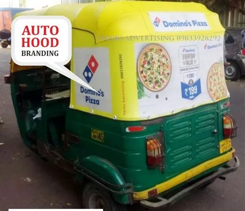
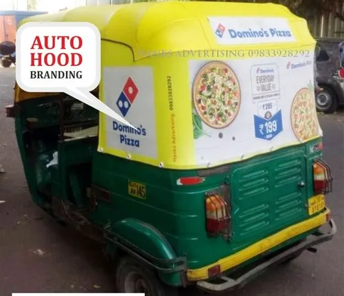

HOW TO REACH
Varanasi is easily accessible from all parts of the country. Very well connected by road, rail and air, the City offers convenient and comfortable travelling options to and from other cities of India.
Airways


Several airlines operates the flights from LBS airport Babatpur which is 22 km. from Varanasi and 30 km. from Sarnath. There is both Domestic and International flights available from Babatpur Airport Varanasi. For domestic flights several flights are available from Varanasi to Delhi, Agra, Khajuraho, Calcutta, Mumbai, Jaipur, Lucknow, Gaya, Chennai, Bengaluru, Ahmadabad, Hyderabad, Bhuvaneshwar, Guwahati etc. International Flights to Colombo, Bangkok, Kathmandu and Sharjah are available.
Railways


Varanasi is an important and major rail junction. The city is served by trains from all metros and major cities across the country. New Delhi, mumbai, Calcutta, Chennai, Gwalior, Meerut, Indore, Guwahati, Allahbad, Lucknow, Dehradun… the city has direct rail connections. Varanasi Cantt Railway Station Enquiry number 135. Some important trains from Varanasi station are Kashi Vishwanath Express (Varanasi-Delhi), Mahamana Express(Varanasi- New Delhi), Shiv Ganga Express(Varanasi- New Delhi), Shramjivi Express (Patna- Varanasi-Delhi), Farakka Express (MaldaTown-Varanasi-Bhiwani), Mahanagri Express (Varanasi-Mumbai), Pawan Express (Varanasi-Mumbai), Sabermati Express (Varanasi-Ahamedabad), Ganga-Kaveri Express (Varanasi-Chennai), Purva Express (Howrah- Varanasi-Delhi), Himgiri Express (Jammu-Varanasi-Howrah), Siyaldah Express (Varanasi-Jammu Tawi), Marudhar Express (Varanasi / Agra /Jaipur). From Pandit Deen Dayal Uadhyaya Junction (16 Km. from Varanasi) Trains are – Rajdhani Express (Howrah – DDU Jn- Delhi), Toofan Express (Howrah- DDU Jn- Delhi), North East Super Fast Express (Delhi –DDU Jn-Guwahati), Magadh Express (Delhi- DDU Jn – Patna). Varanasi, on (National Highway) NH2 from Calcutta to Delhi, NH7 to Kanya Kumari and NH29 to GoraKhpur is connected literally to the rest of the country by good motorable, all – weather roads. Some important road distances are: Agra 565 km., Prayagraj 128 km., Bhopal 791 km., Bodhgaya 240 km., Kanpur 330 km., Khajuraho 405 km., Lucknow 286 km., Patna 246 km., Sarnath 10 km., Lumbini (Nepal) 386 km., Kushi Nagar 250 km. (via Gorkhpur), UPSRTC Bus Stand, Sher Shah Suri Marg, Golgadda Bus Stand.
By Highways/ Roads

The Uttar Pradesh State Buses as well as the private bus services makes it possible for all to access the city with ease and at a reasonable cost. It solves the query of many who are worried about how to reach Varanasi by road. There are frequent buses from Varanasi to the Allahabad(120 km), Gorakhpur (165 km), Patna (215 km), Lucknow (270 km) and Ranchi (325 km) from Varanasi.
Local Transportation


Taxis: Private taxis are available from travel agencies, hotels, online services etc.


 

Apart from it cycle rickshaws, e-rickshaws, and three wheelers are also readily available. But on some routes specially the old Varanasi areas of temples and markets, one way traffic is maintained. And on that routes auto-rickshaws or big vehicles are not permitted. Tourist should aware on hiring private vehicles, usually cars/taxis/four wheelers are charged for 4,8,12 hours or for full day, with kilometer limit inside city, for 8 hours the rate varies between Rs. 1400-2200 for 4 seated cars. Prepaid Taxi service is available at the LBS airport Babatpur. The rate of reserved autorikshaw and rikshaw ranges from Rs.10 /= to Rs. 15/= per Km depending on routes. The tourist are advised to fix-up the fair before travelling.